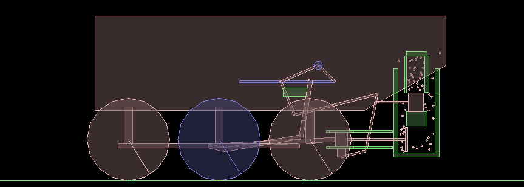
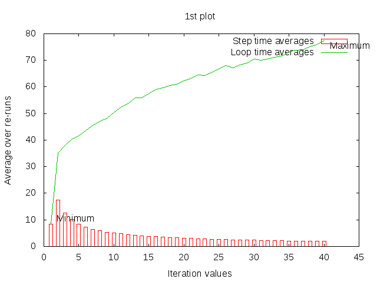
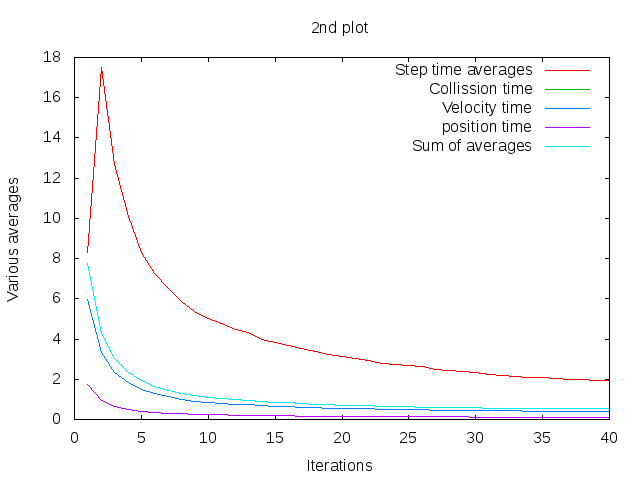
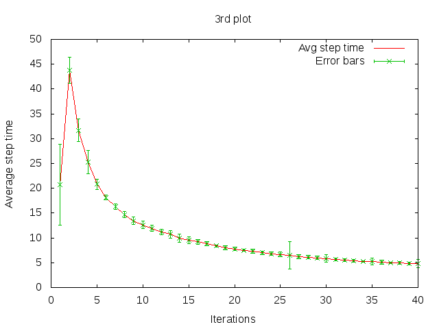
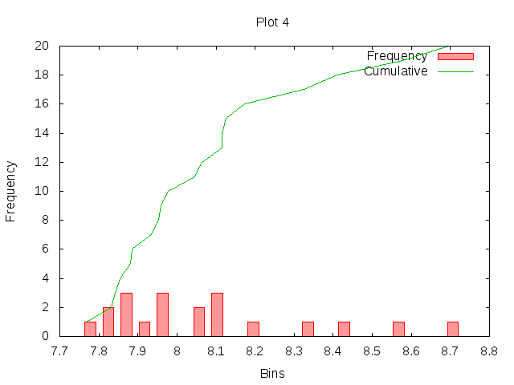
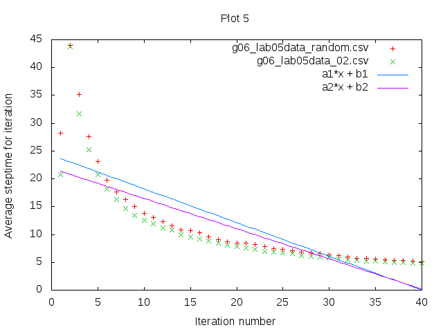
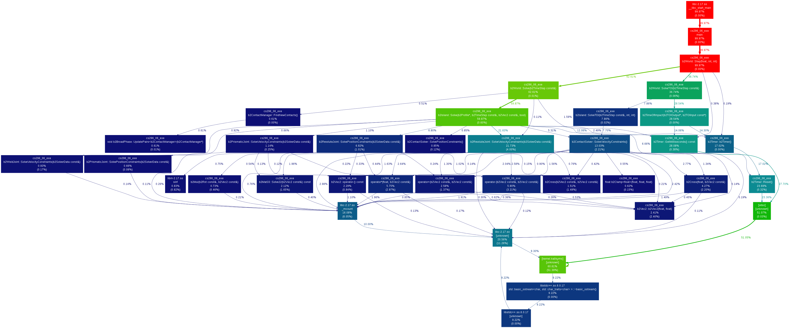

We simulated Steam Locomotivesteam as a part of our CS296 Project. This document describe the code and analyises the code using various techniques like profiling and time graphs for various functions.

Here we describe coding of various interesting things
When the switch gear system is activated that is key 'l' is pressed, First we will wait for the piston to come to its initial postion. When the piston gets to the required position the whole simulation is restarted. The joint between radiusbar and supportflycrank is destroyed. Till the armrest gets to the required positon The armrest is rotated by a particular small angle and a particular number of single steps are done so that all the bodies get into stable positions(the instability is caused due to the rotation of armrest). This part is done is a for loop.
As our emphasis was more on joints and mechanical connection between the parts, We did not make the motion with steam. Instead, we gave a fixed angular velocity to the wheels and hence imparted motion to the system. Though the engine shows steam particles, they do not create the motion and they are just added for the sake of completeness.
To simulate steam, we initialised bodies and fixtures in "dominos.hpp". We first created particles in the engine and as engine has some vent in it, particles go out. But, if particles freely move on the screen, we have hinderence to observe the motion of steam locomotive. So, As they come out of the went and move some distance, We destroyed the particles. For this, we wrote a new step function that checks the position of partices after every step and destroys accordingly. Also, as we tried to keep the number of particles in the engine to be almost fixed, We created new gas particles as the old ones went out. Even this can be ensured by adding some additional lines of code in step function.
Firstly, We broke the train into multiple parts and labelled each part. For each part, We seperately created bodies and fixtures. Sometimes, We addedd multiple fixtures to the same body and thus reduced the number of different bodies required. This is especially useful when multiple bodies are welded to each other and are connected as rigid bodies. As there are multiple small bodies and many joints, care was taken to ensure that bodies are created at proper position, with proper orientation and joints are exactly made.
As our simulation is made in 2D, the simulation is similar to side-view of steam locomotive. When we show a side view, many objects overlap which don't overlap in reality. And for simulating them perfectly, objects which are overlapped should not collide with each other. For this, we used collisionBits and maskBits. By using them, we made selective collisions with the body.
We found out graphs for average times of various functions such as Step time avg, Total time avg, Loop time avg etc using gnuplot.
First plot shows step time and loop time averaged over all reruns (Y) for various iteration values (X) as a bar graph and line graph respectively. As number of iterations increase, step time decreases
as initially the process involves huge collissions and hence it takes more time for computation. As loop time is directly proportional to number of iterations, Loop time increases with iterations.
The graph is not smooth and the reason for it being as such is background random processes take variable time and space and effect running time of this.

This plot shows step time, collision time, velocity and position update times averaged over all reruns (Y) for various iteration values (X) as line graph. This plot also shows Sum of all averages as line graph. As number of iterations increase, collision time, velocity and position update times decrease as initially the process involves huge collissions and hence it takes more time for computation. Again, this plot is not smooth or the same reason as explained above.

Errors in the first few iterations are larger this could be because resource allocation happens in those steps which can take highly variable amounts of time. Later the error bars remain more or less of the same size as the initial iteration is not able to affect the step time average a lot.

The frequency plot is skewed towards larger values. This could be because occasionly the execution is provided more resources.

The line fit on both the randomly extracted points and the set of all points are quite close to each other. This shows the points are not spread out over a large area. This means the process execution on average doesn't takes similar times.

We did a perf analysis to the graph and got the call graph using profiling gprof in debug mode. We realise that b2Solver is taking lot of time. This is because we have a large number of steam particles and as Box2D manualbox2d says, it slows down the speed of simulation. And we also initialised many objects at same point, i.e., origin. Even this slows down the simulation. We were unable to change it because of time constraint.
